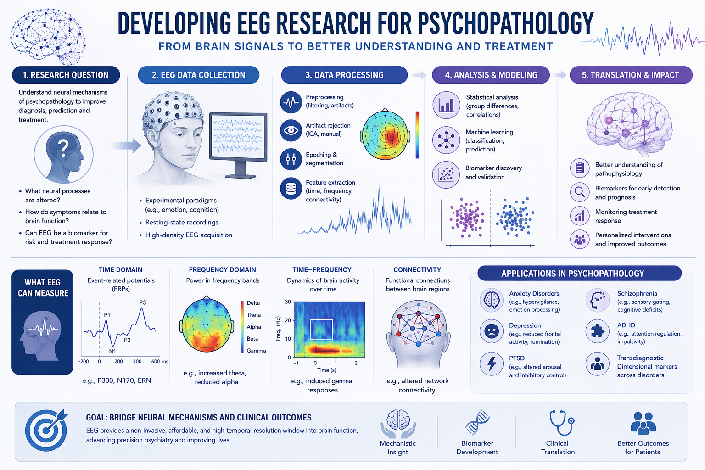
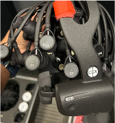

EEG and ERP


Electroencephalography, or EEG, records electrical potentials at the scalp. It is widely used in cognitive neuroscience because it allows researchers to examine changes in brain activity as events unfold. Rather than producing a detailed anatomical picture, EEG is especially useful for investigating the timing of neural responses.
This makes EEG particularly relevant to attention, emotion, decision making, conflict monitoring and recovery. In experimental psychopathology, these measurements complement what people report about their experiences and how they perform on a task.
Event-related potentials (ERPs) describe activity aligned to a particular event, such as an emotional picture, a sound or a response. Repeated trials are typically averaged to make consistent activity easier to distinguish from ongoing variation. The EEG Notes explain this distinction, along with the limits of interpreting an averaged waveform.
Eye tracking basics
Eye tracking measures where a person looks, how gaze moves and how long it remains in a region. It offers a useful way to study attention during viewing of emotional scenes, faces or other meaningful information.
First fixation can help describe initial orienting; dwell time summarises how long a region is viewed; transitions between regions can describe exploration. These measures answer different questions. Looking away from a picture does not necessarily mean that emotional processing has ended, and looking at it does not reveal exactly what someone is thinking.
Before recording, calibrate and validate the mapping between the eyes and the display. During analysis, define areas of interest and rules for blinks, lost tracking and fixation detection. Account for image size, position and visual salience when comparing emotional categories.
Combining eye tracking and EEG requires accurate synchronisation and careful handling of eye-movement artifacts. Gaze behaviour may be an outcome of interest as well as a source of contamination in the EEG.
Methods and tools
Our research combines experimental psychology with neurocognitive methods to study how brain and behaviour interact in real time. The emphasis is on methods that can distinguish fast-changing emotional and cognitive processes.
- Behavioural tasks
- Computer-based experiments measure responses such as reaction time, accuracy, choices and ratings. A task should separate the process of interest from differences in task difficulty, motor demands or stimulus properties.
- Experimental design
- Specify the comparison before selecting a measure. Manipulating emotional content, task goals or the interval after a stimulus can make competing explanations testable.
- Data processing and analysis
- Keep raw recordings unchanged, document decisions and use reproducible scripts where possible. Visual inspection and recorded quality checks remain essential even with automated pipelines.
Relevant tools include PsychoPy for experimental tasks, MATLAB and EEGLAB for EEG analysis, and R or SPSS for statistical analysis. Software choice should follow the research question and the needs of the workflow.
- PsychoPy timing and synchronisation — why display, response-device and trigger timing should be checked on the actual experimental system.
- EEGLAB tutorials — an introduction to importing, inspecting and analysing EEG.
- MNE-Python tutorials — an additional learning resource for scripted electrophysiology analysis.
Designing an interpretable experiment
- Define the question. Does it concern initial reactivity, sustained engagement or recovery? Specify what would count as evidence for each explanation.
- Choose the comparison. Match relevant stimulus properties and distinguish emotional valence from arousal. Consider whether task instructions themselves change attention.
- Plan the timeline. Include a baseline, clearly recorded events and enough time to observe the intended process. A recovery question requires observation after the emotional event.
- Pilot the recording. Check comprehension, usable trial counts, response accuracy, trigger alignment and fatigue. Verify actual stimulus timing rather than relying only on software timestamps.
- Specify the analysis. Record outcomes, exclusions, electrode regions, time windows and statistical comparisons before inspecting the effects of interest where possible.
- Plan for participants. Use appropriate ethical review, informed consent, breaks and a clear withdrawal procedure, particularly when presenting unpleasant material.
A well-controlled task narrows the interpretation of a result. It does not make a complex construct such as anxiety equivalent to a single reaction-time difference or EEG component.
Reading list
These external resources are a starting point for students and researchers. They cover foundations, practical methods and emotional processing; they are not publications from AffectNeuroLab.
- Cognitive and affective neuroscience
- The origin of extracellular fields and currents explains how electrical measurements relate to neural activity. Begin here when interpreting what a scalp signal can represent.
- EEG and ERP foundations
- ERP CORE provides external example paradigms, recordings and processing materials. Its examples connect experimental contrasts to identifiable ERP components.
- Eye tracking and attention
- Start with the calibration and event-detection documentation for the system used in your study. Compare initial orienting, dwell time and disengagement rather than treating them as interchangeable measures.
- Psychopathology and brain function
- NIMH’s RDoC physiology overview places physiological measures within a broader research framework.
- Emotional processing and recovery
- The persistence of attention to emotion: brain potentials during and after picture presentation is an empirical example of measuring activity beyond stimulus presentation.
- Methods and research design
- EEG-BIDS documentation explains how recordings, events and recording metadata can be organised for reuse.
Frequently asked questions
What is EEG?
EEG measures small electrical potential differences using electrodes on the scalp. It helps investigate how neural activity changes during tasks and over time.
Is EEG painful?
Scalp EEG is non-invasive and records signals; it does not deliver stimulation. Cap pressure, preparation or gel may be uncomfortable for some participants. A study’s information sheet should explain its specific procedure.
Can EEG diagnose depression or anxiety?
An EEG pattern from a research task is not, by itself, a diagnosis of depression or anxiety. Group differences and research associations must not be treated as a clinical test for an individual.
What is an ERP?
An event-related potential is activity aligned to an event and usually estimated across repeated trials. It helps investigate the timing of processes rather than providing a direct label for a thought or emotion.
Why study attention in psychopathology?
Attention affects which information is prioritised and how long it remains engaged. Research can ask whether these patterns relate to symptoms, while distinguishing initial orienting from sustained attention and disengagement.
Do brain-based methods replace self-report?
No. Ratings, interviews, behaviour and physiological recordings address different aspects of experience. Their agreement and disagreement can both be informative.
Can students enquire about research?
Yes. See Join for how to make an enquiry. Current supervision and position availability must be confirmed directly.